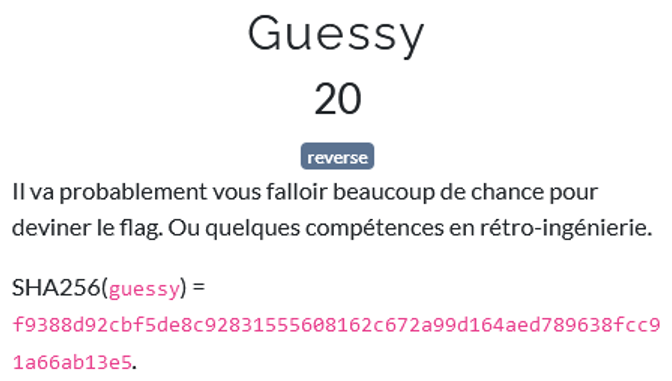
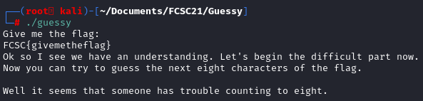
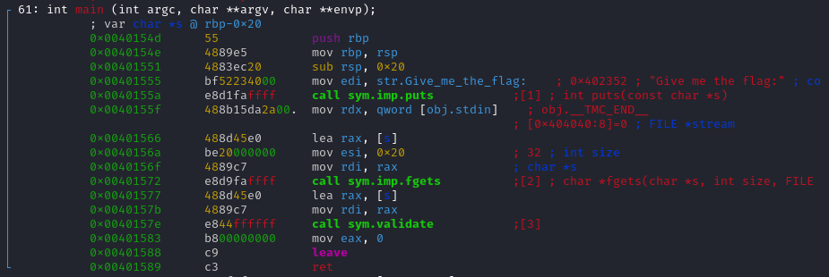
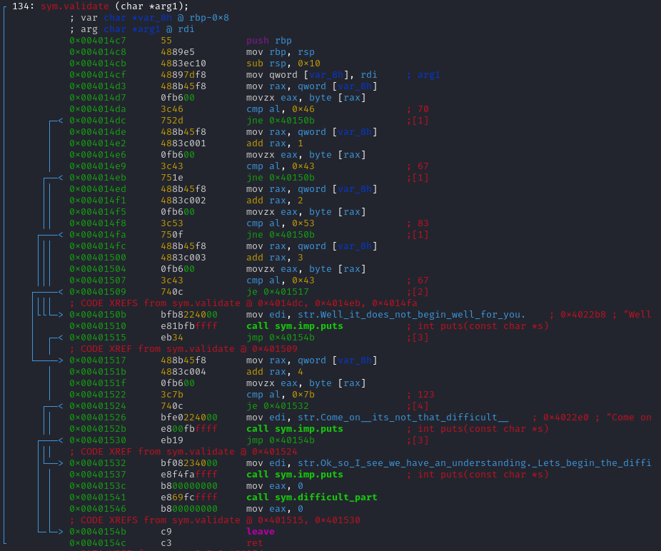
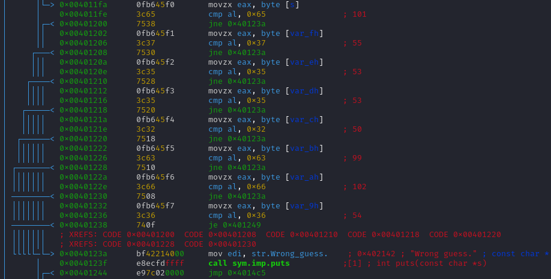
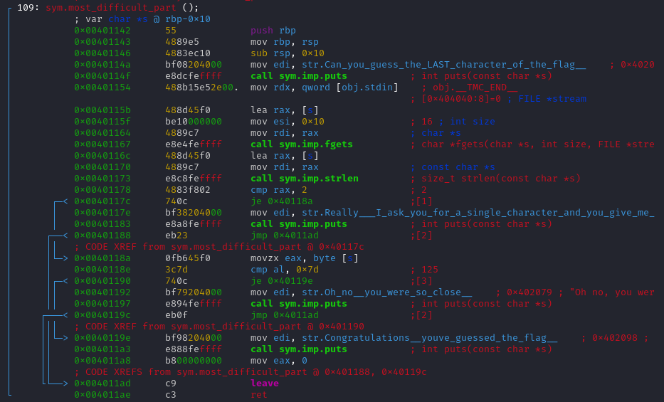

  After running the program, it looks like the challenge is composed of several part, and we have to guess the flag through reversing the program. Let's open the program with radare2.  The main function is easy to understand, it ask the user for the flag, wait for the user input, and then call the validate() function. The program is composed of several parts, we have to understand each part to retrieve the flag.  After entering in the function validate(), there are many conditional jumps that are performed. It is quite simple to understand here, we just have to convert those hexadecimal numbers in ASCII character.
0x43 = C
0x53 = S
0x43 = C
0x7b = {
 This part is also the same, we just need to convert those hexadecimal into ASCII characters.
FCSC{e7552cf6
 On this one, we have an instruction add eax, eax that tell you that eax is getting multiplied by 2 before the conditional jump. So I suppose we just need to divide the comparason by 2.
On this one, we have an instruction add eax, eax that tell you that eax is getting multiplied by 2 before the conditional jump. So I suppose we just need to divide the comparason by 2.
FCSC{e7552cf64ce2e5ad
cmp eax, 0x180
mozx eax, byte [var_1fh]
xor eax, edx
In the last conditional jump there isn't any xor.
mozx eax, byte [var_19h]
cmp dl, al
je 0x4014c5
After this, the program call another function, most_difficult_part(), we can expect some challenge here !  Looks like we only have one conditional jump in the program.
je 0x40119e
FCSC{e7552cf64ce2e5ad0bb0954f167a02cf}